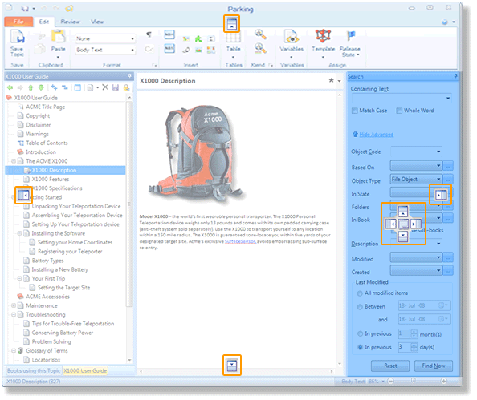

When you work in an Author-it book, the standard view is to have the contents on the left and the content on the right. If needed, you can rearrange the panes. This enables you to include the contents, content, and another tab, such as the search tab, in the same view. You can move the panes to different locations as needed.
The following image shows the search tab included in the book view layout:

For more information about customizing the book layout view, refer to these resources:
Dock tabs inside the Editor (Author-it Knowledge Center)